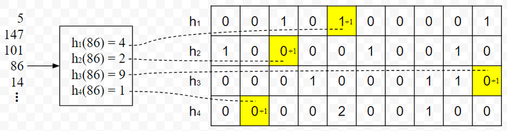

Count-min Sketch
Count-min sketch (CM Sketch),büyük veri akışlarındaki (data stream) elemanların yaklaşık frekanslarını (kaç kere gözlemlendiğini) tahmin etmek için tasarlanmış bir olasılıksal veri yapısıdır. Geleneksel hash tablolarının yetersiz kaldığı yüksek hacimli veri akışlarında, elemanların kaç kez görüldüğünü etkili bir şekilde takip etmeyi sağlar.

Count-min sketch algoritması iki bileşenden oluşur:
- $d\times w$ boyutlu bir matris: Burada $d$ hash fonksiyonu sayısını ve $w$ ise her hash fonksiyonu için sayaç sayısını temsil eder.
- $d$ adet bağımsız hash fonksiyonu: Her biri, $[0,w-1]$ aralığında bir indeks üretir.
Algoritmanın çalışma prensibi şu şekildedir:
-
Bir elemanın frekansını güncelleme: Eleman her hash fonksiyonundan geçirilerek $d$ tane $j$ indeksi elde edilir. Bu indeksler ile matrisin $i,j$ elemanı arttırılır.
-
Bir elemanın tahmini frekansını bulma : Frekansı sorgulanacak eleman her bir hash fonksiyonundan geçirilerek Her hash fonksiyonunun işaret ettiği sayaç değeri okunur ve bu değerlerin minimumu döndürülür. Hash çakışmaları (collison) nedeniyle sayaçlar gerçek değerlerinden büyük olabilir ama asla küçük olamazlar.
Count-Min Sketch hem yaklaşık hem de probabilistik bir algoritma olduğu için, iki temel parametre algoritmanın bellek ve zaman gereksinimlerini doğrudan etkiler: sorgu hatası $\epsilon$ ve hata olasılığı $\delta$. Algoritma, frekans tahminlerindeki hatanın $\epsilon n$ geçmeyeceğini en az $1-\epsilon$ olasılıkla garanti eder.
Hash fonksiyon sayısının artması kötü tahmin olasılığını azaltır. İstenilen hata olasılığı $\delta$ için, Count-Min Sketch matrisinin satır sayısına karşılık gelen optimal hash fonksiyon sayısı:
$$ d = \left\lceil \ln(\frac{1}{\delta}) \right\rceil $$
ile hesaplanabilir. Benzer şekilde, matrisin genişliği $w$ ise istenilen hata $\epsilon$ için:
$$ w = \left\lceil \frac{e}{\epsilon} \right\rceil $$ olarak hesaplanır. Burada $e$ Euler sayısıdır.
Count-Min Sketch'in güçlü özelliklerinden biri, toplam veri akışının belirli bir yüzdesinden fazla görülen "heavy-hitter" elemanları tespit edebilmesidir. Bu özellik, anomali tespiti ve trafik analizi gibi uygulamalarda kritik öneme sahiptir.
Bir sonraki yazıda görüşmek üzere.